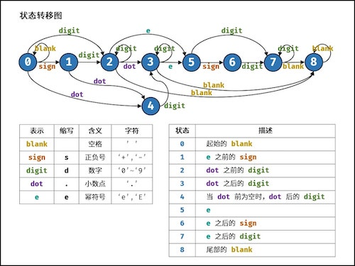

Authored by Tony Feng
Created on May 7th, 2022
Last Modified on May 7th, 2022
Task 1 - Q20. 表示数值的字符串
Question
请实现一个函数用来判断字符串是否表示数值（包括整数和小数）。
数值（按顺序）可以分成以下几个部分：
- 若干空格
- 一个 小数 或者 整数
- （可选）一个 ’e’ 或 ‘E’ ，后面跟着一个 整数
- 若干空格
小数（按顺序）可以分成以下几个部分：
- （可选）一个符号字符（’+’ 或 ‘-’）
- 下述格式之一：
- 至少一位数字，后面跟着一个点 ‘.’
- 至少一位数字，后面跟着一个点 ‘.’ ，后面再跟着至少一位数字
- 一个点 ‘.’ ，后面跟着至少一位数字
整数（按顺序）可以分成以下几个部分：
- （可选）一个符号字符（’+’ 或 ‘-’）
- 至少一位数字
部分数值列举如下： ["+100", “5e2”, “-123”, “3.1416”, “-1E-16”, “0123”]
部分非数值列举如下： [“12e”, “1a3.14”, “1.2.3”, “+-5”, “12e+5.4”]
Solution
|
|
Explanation
- State Machine

- Time Complexity: O(N)
- Space Complexity: O(1)
Task 2 - Q67. 把字符串转换成整数
Question
写一个函数 StrToInt，实现把字符串转换成整数这个功能。不能使用 atoi 或者其他类似的库函数。
- 首先，该函数会根据需要丢弃无用的开头空格字符。
- 当我们寻找到的第一个非空字符为正或者负号时，则将该符号与之后面所欲=有连续数字组合起来，作为该整数的正负号。
- 假如第一个非空字符是数字，则直接将其与之后连续的数字字符组合起来，形成整数。
- 该字符串除了有效的整数部分之后也可能会存在多余的字符，这些字符可以被忽略，它们对于函数不应该造成影响。
- 假如该字符串中的第一个非空格字符不是一个有效整数字符、字符串为空或字符串仅包含空白字符时，则你的函数不需要进行转换。
- 在任何情况下，若函数不能进行有效的转换时，请返回 0。
- 我们只能存储 32 位大小的有符号整数[−2147483648, 2147483647]。
- 如果数值超过这个范围，请返回 INT_MAX ( 231 − 1) 或 INT_MIN (−231) 。
Solution
|
|
Explanation
- Time Complexity: O(N)
- Space Complexity: O(1)